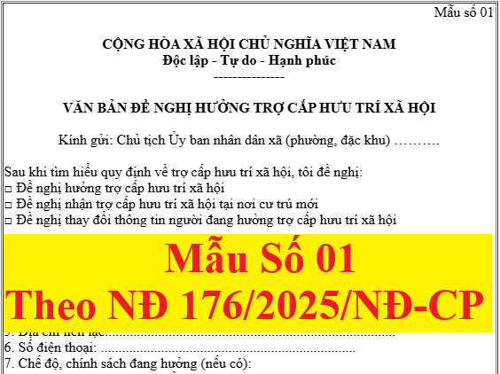

Mẫu số 01 được ban hành kèm theo Nghị định số 176/2025/NĐ-CP là Văn bản đề nghị hưởng trợ cấp hưu trí xã hội. Mẫu này được sử dụng trong thủ tục thực hiện trợ cấp hưu trí xã hội
Theo quy định tại điểm a, khoản 1, điều 4 của Nghị định số 176/2025/NĐ-CP thì:
Điều 4. Trình tự, thủ tục thực hiện trợ cấp hưu trí xã hội
1. Trình tự, thủ tục thực hiện trợ cấp hưu trí xã hội theo quy định sau đây:
a) Người đề nghị trợ cấp hưu trí xã hội có văn bản đề nghị hưởng trợ cấp hưu trí xã hội theo Mẫu số 01 ban hành kèm theo Nghị định này gửi trực tiếp hoặc qua tổ chức bưu chính hoặc trên môi trường mạng đến Chủ tịch Ủy ban nhân dân xã, phường, đặc khu trực thuộc tỉnh, thành phố nơi cư trú (sau đây gọi chung là cấp xã);
Và nội dung cụ thể của Mẫu số 01 được ban hành kèm theo Nghị định số 176/2025/NĐ-CP như sau:
|
Mẫu số 01
CỘNG HÒA XÃ HỘI CHỦ NGHĨA VIỆT NAM Độc lập - Tự do - Hạnh phúc --------------- VĂN BẢN ĐỀ NGHỊ HƯỞNG TRỢ CẤP HƯU TRÍ XÃ HỘI
Kính gửi: Chủ tịch Ủy ban nhân dân xã (phường, đặc khu) ……….
Sau khi tìm hiểu quy định về trợ cấp hưu trí xã hội, tôi đề nghị:□ Đề nghị hưởng trợ cấp hưu trí xã hội □ Đề nghị nhận trợ cấp hưu trí xã hội tại nơi cư trú mới □ Đề nghị thay đổi thông tin người đang hưởng trợ cấp hưu trí xã hội I. Thông tin người đề nghị trợ cấp hưu trí xã hội 1. Họ, chữ đệm, tên (Viết chữ in hoa): ......................................................... 2. Ngày, tháng, năm sinh: ………. Giới tính: …….Dân tộc: ...................... 3. Thẻ Căn cước hoặc số định danh cá nhân .............................................. 4. Nơi cư trú: ....................................................................................... 5. Địa chỉ liên lạc:................................................................................. 6. Số điện thoại: ........................................................................ 7. Chế độ, chính sách đang hưởng (nếu có): □ Lương hưu (Mức ………. đồng/tháng. Hưởng từ tháng ………/…………..) □ Trợ cấp Bảo hiểm xã hội (Mức ………. đồng/tháng. Hưởng từ tháng ………/…………..) □ Trợ cấp xã hội (Mức ………. đồng/tháng. Hưởng từ tháng ………/…………..) □ Trợ cấp ưu đãi Người có công với cách mạng (Mức ………. đồng/tháng. Hưởng từ tháng ………/…………..) □ Trợ cấp, phụ cấp khác (Mức ………. đồng/tháng. Hưởng từ tháng ………/…………..) 8. Tình trạng hộ □ Hộ nghèo □ Hộ cận nghèo □ Không thuộc hộ nghèo, cận nghèo 9. Nơi đề nghị nhận trợ cấp hưu trí xã hội: ............................................. 10. Tài khoản ngân hàng - Tên tài khoản: ......................................................................... - Số tài khoản: ………………………… Ngân hàng: ................................ 11. Thay đổi thông tin nơi cư trú, thay đổi thông tin của người đang hưởng trợ cấp hưu trí: - Nơi cư trú mới (Ghi cụ thể): ........................................................ - Thay đổi thông tin (Ghi cụ thể): .................................................... II. Thông tin người giám hộ, người được ủy quyền (nếu có) 1. Họ, chữ đệm, tên: ..................................................................... 2. Ngày, tháng, năm sinh: ................................................................ 3. Thẻ Căn cước hoặc số định danh cá nhân: ................................... 4. Địa chỉ liên hệ: ............................................................................... 5. Số điện thoại: ......................................................................... 6. Quan hệ với người đề nghị hưởng trợ cấp hưu trí xã hội: Tôi xin cam đoan những lời khai trên là đúng sự thật, nếu có điều gì khai không đúng, tôi xin chịu trách nhiệm hoàn toàn.
Ghi chú: (1) Nếu văn bản gửi điện tử thì người đề nghị không cần ký. |
----------------------------------------------------------------------------
Các bạn muốn tải (download) Mẫu đề nghị hưởng trợ cấp hưu trí xã hội Mẫu 01 theo NĐ 176/2025 trên đây về để tham khảo và sử dụng thì có thể gửi mail về địa chỉ mail: ketoandieutam@gmail.com => Kế Toán Diệu Tâm sẽ gửi lại Mẫu đề nghị hưởng trợ cấp hưu trí xã hội Mẫu 01 theo NĐ 176/2025 này cho các bạn
----------------------------------------------------------------------------
